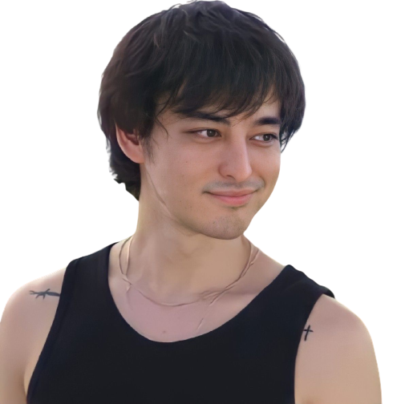

Biografia

Es un cantante, productor y compositor de música r&b que comenzó su carrera musical formalmente en 2017 y que desde entonces se ha hecho con el cariño y apoyo de un gran número de personas. A pesar de haber nacido en Osaka, Japón y hablar japonés, su repertorio de canciones y proyectos discográficos son todos en inglés. Actualmente vive en Manhattan, Nueva York, Estados Unidos.
Su absurdo canal de YouTube, ahora desaparecido, consistía en música, discursos, canciones en ukelele y un espectáculo extraño, con todos los personajes principales interpretados por Miller, incluido el personaje titular de Filthy Frank. También produjo música de comedia absurda bajo el apodo de Pink Guy, con su discografía que abarca dos álbumes de larga duración y un EP. Su segundo álbum, Pink Season, debutó en el número 70 en Billboard 200.
A finales de 2017, Miller se retiró de Youtube para centrarse en su carrera musical bajo el nombre de Joji, produciendo música más matizada y seria, lanzando el EP In Tongues, que alcanzó el puesto número 58 en el Billboard 200 y su álbum de estudio debut Ballads 1 , que alcanzó el número 1 en la lista de R&B y hip-hop de Billboard en noviembre de 2018. Con esto, Miller se convirtió en el primer artista asiático en hacerlo.
La música de Joji se ha descrito como una mezcla entre R&B y trip hop.